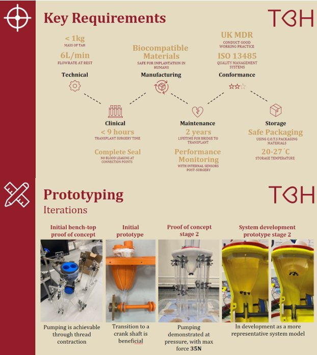

Engineering a Heart That Saves Lives
Team Bath Heart is a long-running student engineering project with an extraordinary goal: to develop a fully mechanical total artificial heart suitable for implantation in real patients awaiting heart transplants. The device aims to serve as a bridge-to-transplant, keeping patients alive for up to two years while they await a donor heart.
I joined TBH as CAD lead and assembly engineer, taking primary responsibility for remodelling critical components, resolving tolerance errors, and refining the mechanical systems at the heart of the prototype — including the valve mechanisms, gear assembly, and pumping bag configuration.
Designed to Clinical Standards
The device must meet a rigorous set of technical, clinical, manufacturing, and regulatory requirements — including UK Medical Device Regulations (MDR) and ISO 13485 quality management standards. Every design decision is made with patient safety and biocompatibility at its core.
Total mass of device for comfortable implantation within the human chest cavity.
Minimum cardiac output at rest. Complete seal required — no blood leakage at connection points.
Maximum implant surgery time to minimise patient risk during transplant procedure.
All materials must be safe for long-term implantation in the human body.
Minimum operational lifetime as a bridge-to-transplant, with performance monitoring via internal sensors post-surgery.
UK MDR compliance and ISO 13485 quality management systems throughout design and manufacture.
CAD Remodelling & Assembly Engineering
My primary role centred on the CAD remodelling of critical subsystems, addressing a range of issues inherited from earlier design iterations — including unclear dimensions, geometric tolerance errors, and parts that required adaptation to accommodate design updates from other team members.
I led a systematic component-by-component review, ensuring each part was accurately dimensioned and correctly toleranced for assembly. Key areas of focus included:
Heart valve mechanisms — refined geometry and seating surfaces to improve sealing performance and reduce backflow risk. Gear assembly — corrected meshing tolerances and bearing fits to ensure smooth, reliable power transmission from motor to pumping mechanism. Bag configuration — optimised the shape and mounting of the pumping bags to maximise stroke volume and match the 6 L/min flow target.


Four Stages of Development
The project progressed through four major prototype iterations, each validating key aspects of the design and informing the next stage of development.
Demonstrated that pumping is achievable through thread contraction — validating the fundamental actuation principle.
Transition to a crankshaft-driven mechanism, proving more efficient and reliable power transmission to the pumping bags.
Pumping demonstrated at pressure with a maximum force of 35N — a key clinical milestone confirming the mechanism can generate sufficient cardiac output.
In development as a more representative system model with full enclosure and refined internal layout for implantation geometry.